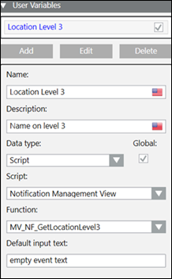
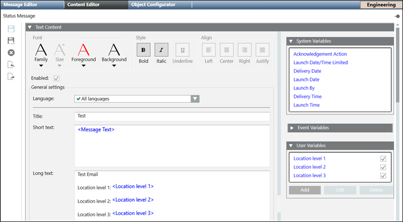

Using Scripts in the Message Template
The Script function is available only for Reno Plus license users.
While authoring the content, you can add a script from the Application View > Logic > Scripts node in the System Browser. For more information on scripts, refer to the Scripts topic.

NOTE:
Notification provides sample scripts, namely, Notification Logical View, Notification Management View, Notification Sample Script, and Notification User View. These sample scripts are useful in scenarios where you need to format event information. Additionally, you can create your own scripts if required.
In the following example, an inbuilt sample script Notification Management View and its function MV_NF_GetLocationLevel3 is used to deliver just the third level of the location of the Management view path of the data point, which triggers a Notification. For example, if location is Project.Management System.Servers.Main Server, it will deliver only Main Server.
- System Manager is in Engineering Mode.
- System Browser is in Application View.
- Select Notification > Notification Templates > Status Messages node.
NOTE: You can go to your desired message template. - Click the Message Content Editor tab and then open the Text Content expander.
- The Text Editor options display.
- Expand User Variable expander and click Add.
- Select Script data type from the Data type drop-down list.
- The User Variable expander displays the following options.

- a. Name: Enter Location Level 3 as the name of your user variable.
- b. Description: Enter Name on level 3 as the description of your user variable.
- c. Data type: Select the Script type.
- d. Script: Select the Notification Management View script from the drop-down list.
- e. Function: Select the MV_NF_GetLocationLevel3 function from the drop-down list.
NOTE: The Function drop-down list displays only the applicable functions for the selected script. - f. Default input text: Default input text parameter value is used as default value while launching message manually. For example, enter empty event text.
- Drag and Drop the Location Level 3 user variable in the message template as required and save the template. The following image displays the message template.
NOTE: Once an alarm triggers the incident template, it sends the third level of the event location in the message content.
